Introducción
El uso de redes locales es de vital importancia en la actualidad. Saber acerca de la configuración de las redes para mayor seguridad y mejor desempeño pasó de ser algo raro de ver a algo fundamental para poder usar aparatos electrónicos modernos (Principalmente, aparatos del internet de las cosas).
En esta práctica se usa la configuración de un router para montar un servidor local en una red doméstica Usando diversas herramientas como html y algunos comandos básicos de cmd en windows
Objetivos
Objetivo general
Conocer, investigar e identificar los pasos para configurar una red local y el acceso a recursos de un equipo en red.
Objetivos específicos
Identifica la Ip de acceso de la red de tu router y accede a su ruta de configuración.
Elabora un mapa de accesos de equipos y sus respectivas IPs en la Red.
En tu computadora instala Xampp para configurar un servidor local, habilita los servicios de Apache y monta un sitio web
Habilita el acceso al puerto 80 desde el firewall del equipo configurado como el servidor local.
Comprueba el acceso al sitio web montado en el servidor local desde 3 dispositivos distintos (para acceder es necesario estar en la misma red).
Marco
Una red de área local(LAN) es una red de computadoras que abarca un área reducida a una casa, un departamento o un edificio.
La topología de red define la estructura de una red. Una parte de la definición topológica es la topología física, que es la disposición real de los cables o medios. La otra parte es la topología lógica, que define la forma en que los hosts acceden a los medios para enviar datos.
La topología en estrella conecta todos los nodos con un nodo central. El nodo central conecta directamente con los nodos, enviándoles la información del nodo de origen, constituyendo una red punto a punto. Si falla un nodo, la red sigue funcionando, excepto si falla el nodo central, que las transmisiones quedan interrumpidas.
Un enrutador (del inglés router) o encaminador, es un dispositivo que permite interconectar computadoras que funcionan en el marco de una red. Su función es la de establecer la ruta que destinará a cada paquete de datos dentro de una red informática.
Desarollo
Se accedió al usuario root del router doméstico el cuál es un HG8145V5
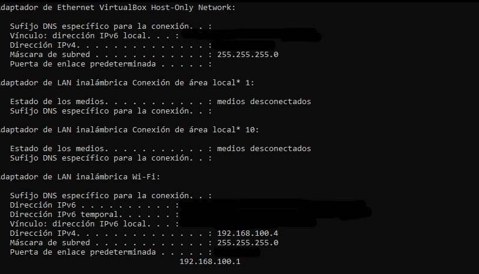 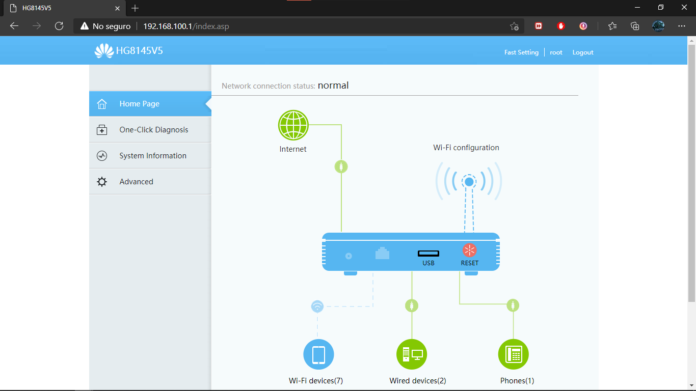Con dicho acceso se creó un diagrama de los aparatos conectados a ese router
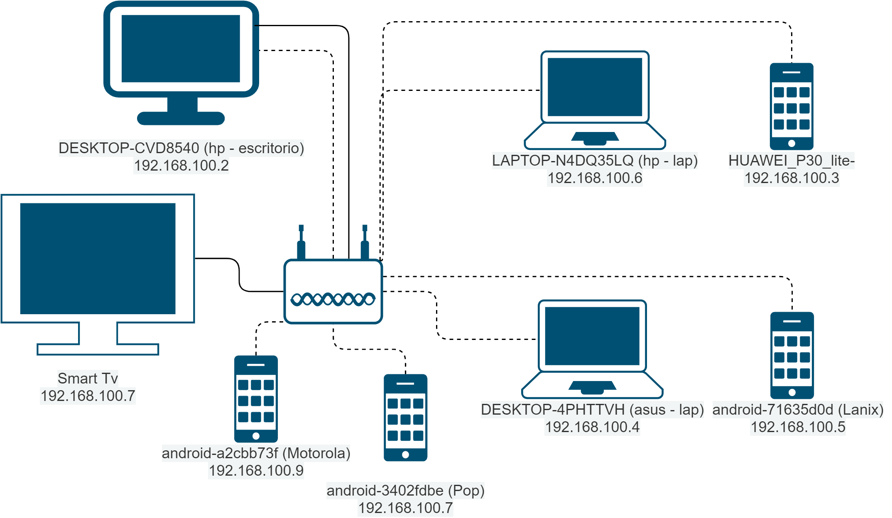Una vez instalado Xampp, se habilitóel acceso al puerto 80 y se montó un sitio web en un servidor local al que se accedió con distintos dispositivos
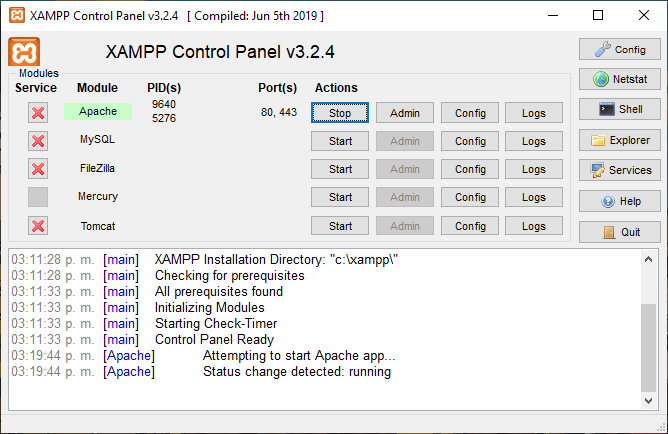 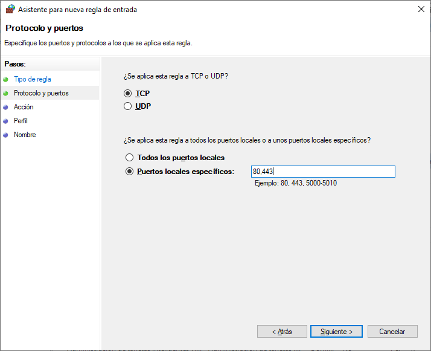 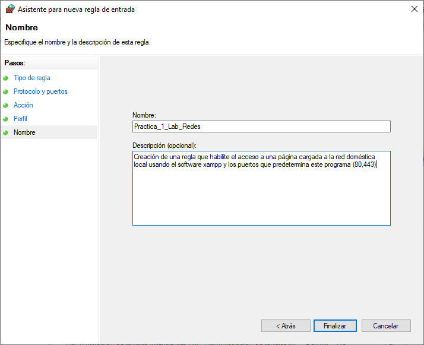 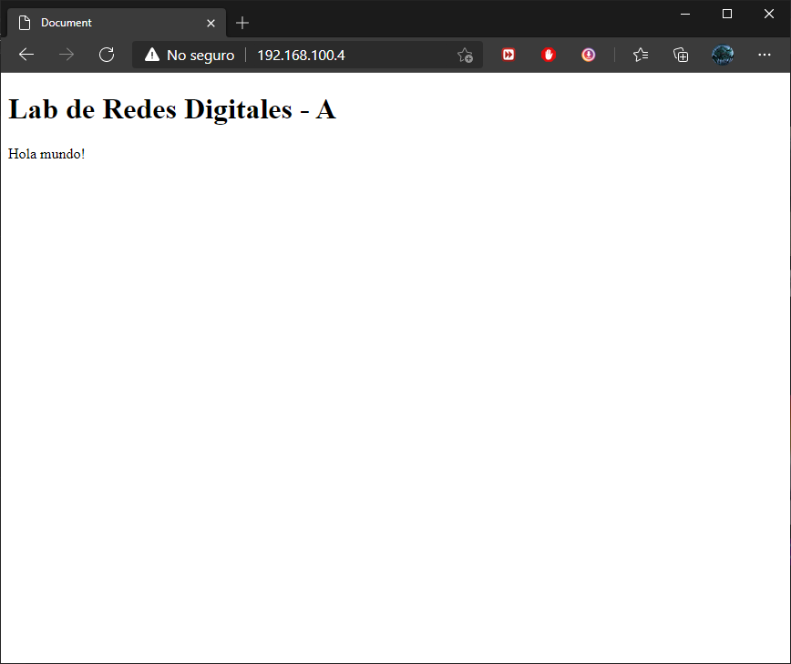
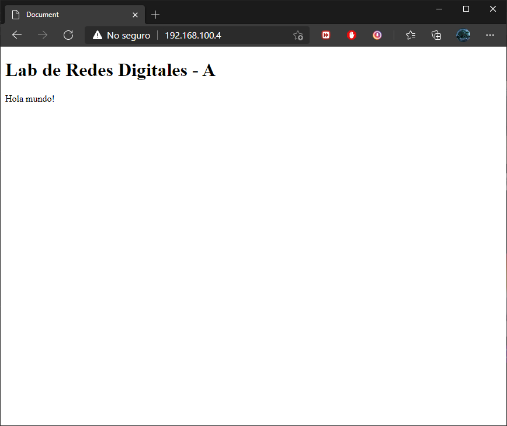
Acceso desde varios dispositivos
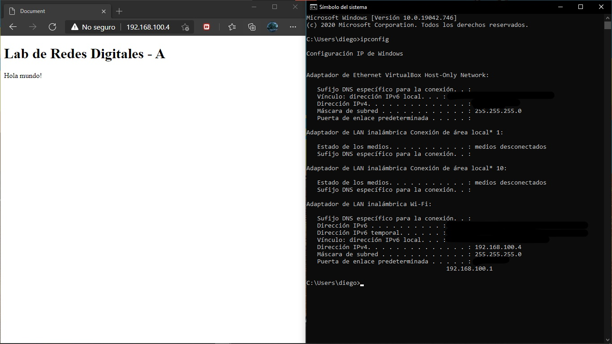 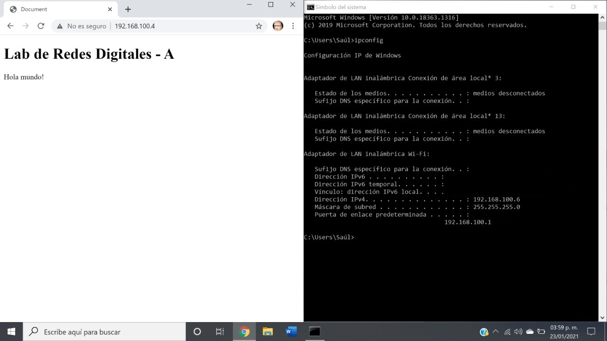 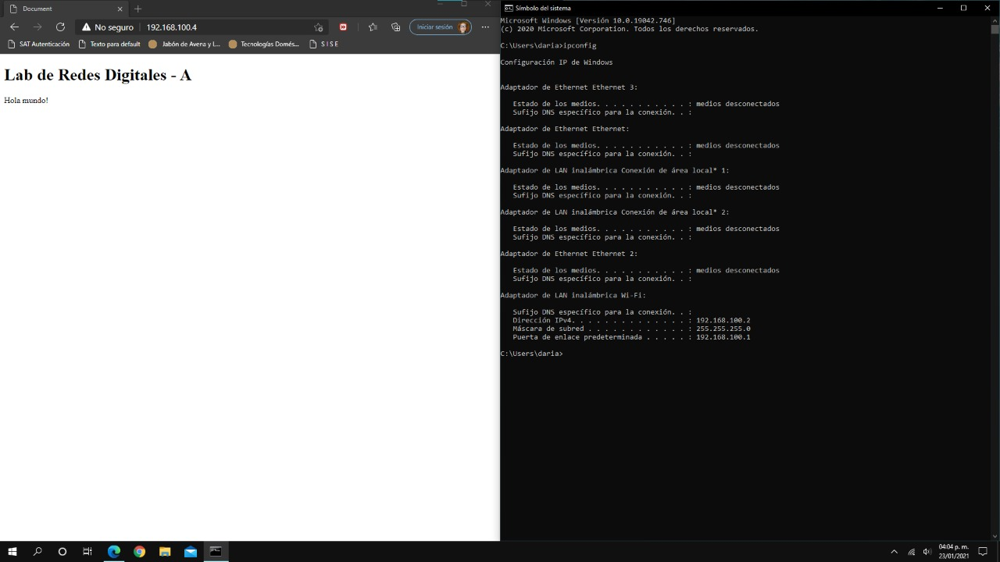Conclusión
Se logró identificar la Ip de acceso de la red de tu router y se accedió a su ruta de configuración.
Se elaboró un mapa de accesos de equipos y sus respectivas IPs en la Red.
Se instaló Xampp para configurar un servidor local, habilitando el acceso al puerto 80 desde el firewall del equipo configurado como el servidor local.
Se coomprobó el acceso al sitio web montado en el servidor local desde 3 dispositivos distintos
Referencias
Devece, C., Guiral, J., & Lapiedra, R. (2011). Introducción a la gestión de sistemas de información en la empresa. Universitat Jaume I.
Stair, R., & Reynolds, G. (2010). Principles of Information Systems. Boston: Course Technology